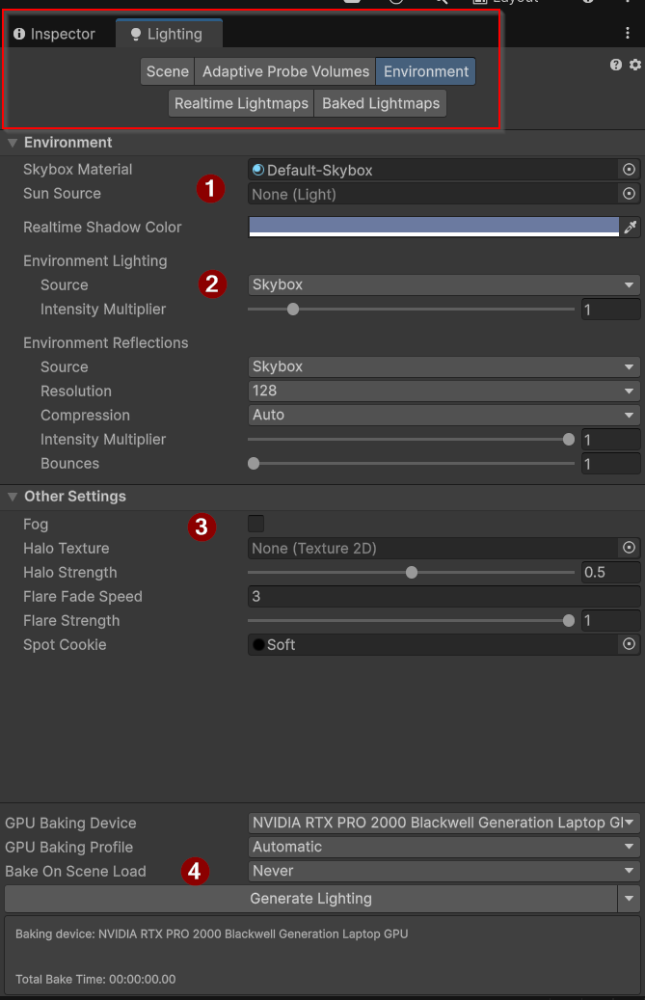
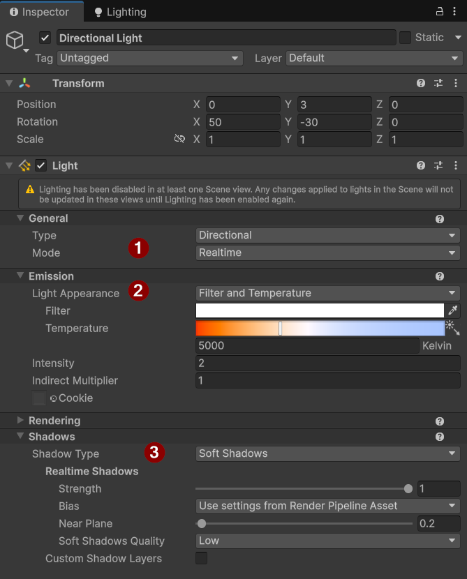

Éclairage
Information sur la page
- 4-6d Utilisation des composantes modulaires pour l'éclairage
Description des types et des réglages de l'éclairage utilisés dans Unity.
Démonstration disponible sur GitHub
Vous pouvez cloner le code source de cette démonstration sur GitHub.
Éclairage
L'éclairage dans Unity peut provenir de trois sources distinctes, soit l'éclairage ambiant (ce qui inclut la skybox), les sources d'éclairages présentent dans le jeu, et les matériaux avec une valeur d'émission de lumière (couleur High Dynamic Range).
Éclairage ambiant¶
Pour régler l'éclairage ambiant, il faut accéder au menu situé à droite de l'onglet de l*'Inpector* ou dans le menu Window > Rendering > Lightning. Cet éclairage s'ajoute aux autres éclairages. Il n'est pas dominant, mais fournira une teinte commune dans le jeu et peut aussi empêcher la scène d'être complètement noire si aucune source de lumière n'est active.

Interface pour régler les paramètres de l'éclairage de l'environnement
- Indique une source de lumière pour agir comme le soleil. La source sera positionnée à l'endroit adéquat pour correspondre à l'image de soleil sur la Skybox procédurale.
- Détermine la source de la couleur ambiante. Par défaut, elle est calculée par la Skybox, mais on peut aussi régler une couleur constante pour un environnement intérieur, par exemple.
- Règle les paramètres pour le brouillard dans le jeu pour obtenir un effet de masquage sur les éléments distants.
- Le baking de l'éclairage est le calcul de l'éclairage pour le projet. C'est une opération lourde, parfois longue, mais nécessaire pour obtenir des effets d'éclairages en temps réel. Durant cette étape, Unity calcule les éclairages statiques sur les objets statiques, éclairages qui seront constants tout au long du jeu. Si votre éclairage ralentit votre éditeur, vous pouvez désactiver le baking automatique.
Sources de lumière¶
Les sources de lumière sont des game objects qui émettent de la lumière avec le composant Light. Ce composant comporte plusieurs sections de paramètres.

Inspector du composant Light
La section 1 présente les paramètres généraux de l'éclairage, soit le type d'éclairage et le mode de rendu. La section 2 (Emission) contient des paramètres propres à chaque type de source ainsi que le contrôle de la couleur.
Le type de source lumineuse peut prendre quatre valeurs :
- Spot : éclaire comme une lampe de scène. Une zone correspondant à un cône tronqué est fortement éclairée. Dans ses paramètres, on peut modifier la portée de l'éclairage.
- Directional : éclaire avec une lumière constante dans une direction. Elle représente une source d'éclairage distante, comme le soleil ou la lune.
- Point : éclaire dans un certain rayon à partir d'un point précis. Elle représente une source lumineuse comme une ampoule ou une torche.
- Area (baked only) : émet de la lumière à partir d'une forme (section shape). Ce type de lumière est plus complexe à calculer et ne peut donc pas être calculé au runtime, d'où l'indication baked only. Il se peut que d'autres modifications doivent être apportées au projet pour que ce type d'éclairage fonctionne. On l'utilise rarement.
Le mode de rendu peut prendre deux valeurs :
- Realtime : l'éclairage est calculé en temps réel, donc la source lumineuse peut se déplacer pendant l'exécution et l'effet sera visible
- Baked only : l'éclairage est précalculé, donc la source lumineuse doit être immobile, un changement dans sa position va déplacer l'objet, mais l'éclairage et les ombres ne suivront pas.
Emission¶
La section 2, emission, permet de changer la couleur, soit avec la valeur Filter and Temperature qui correspond au réglage d'ampoule utilisé dans la vraie vie. La valeur color permet de définir un éclairage teinté. Le champ intensity change la force de la lumière, ce qui a une influence sur la réflexion des surfaces, comme des éclats de lumière.
Ombrages¶
On peut régler la précision des ombrages pour chaque lumière selon trois valeurs :
- Soft Shadows : affiche des ombres au contour lisse comme on aperçoit dans le monde réel.
- Hard Shadows : génère des ombres approximées, donc avec un contour composé d'arêtes droites. Ces ombres sont plus efficaces à calculer.
- No Shadow : la source d'éclairage ne génère pas d'ombres.
Émission par un material¶
Le dernier mode d'émission de lumière par un objet est le paramètre emission dans un material qui utilise le shader standard Lit. En cochant la case emission, on peut régler une couleur HDR et une intensité pour que l'objet apparaisse lumineux.
Un objet avec une valeur d'emission ne contribue pas à l'éclairage des autres objets de la scène. On peut toutefois modifier certains paramètres du projet pour le permettre. La méthode n'est pas décrite ici, mais une recherche rapide vous présentera les étapes à suivre.